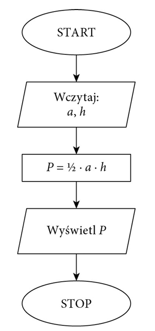
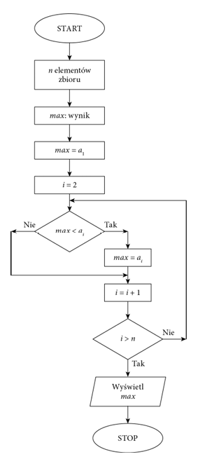

Jednym z podstawowych zagadnień algorytmicznych jest po rządkowanie zbioru danych według określonych jego cech. Szczególnym przypadkiem porządkowania danych jest sorto wanie liczb lub słów. Algorytmy sortowania są klasyfikowane ze względu na sposób działania, złożoność lub stabilność. Prostą metodą sortowania jest sortowanie bąbelkowe. Polega ono na porównywaniu dwóch sąsiednich elementów i zamianie ich miejscami, gdy są ustawione w nieprawidłowej kolejności. Sortowanie kończy się, gdy przy kolejnym przejściu nie ma żadnej zmiany kolejności elementów

Sposób działania algorytmu szybkiego wyszukiwania elementu w zbiorze zależy od tego, czy dane zostały uporządkowane, czy zostały zapisane w przypadkowej kolejno ści. Jeśli dane są nieuporządkowane, należy przejrzeć wszystkie elementy, aby znaleźć ten właściwy.
